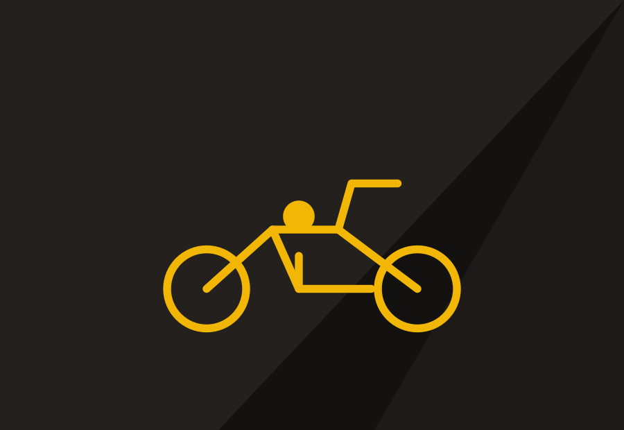
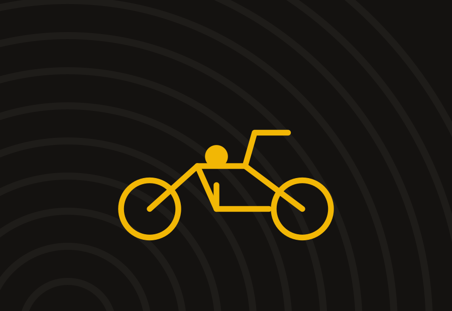
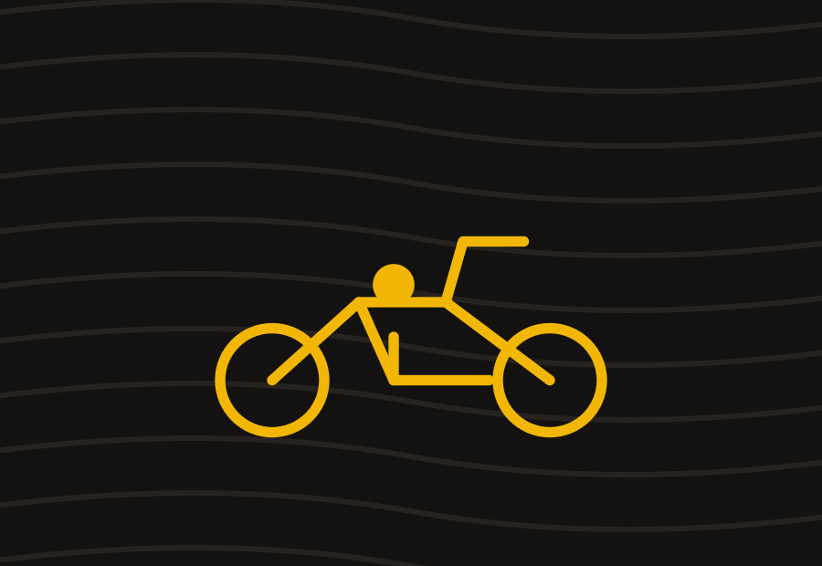

Club Moto
Uscite sociali, raduni e passione per le due ruote tra Val di Vara, golfo dei Poeti e Cinque Terre.
La sezione
La strada come punto d'incontro
Il Club Moto è la sezione più informale della Polisportiva: non un corso, ma un gruppo di soci appassionati di due ruote che organizza uscite sociali, raduni e piccoli eventi conviviali, aperti anche a chi vuole semplicemente iniziare a frequentare la sede.
Le uscite seguono un calendario stagionale, con percorsi pensati per tutti i livelli: dalle strade panoramiche del golfo dei Poeti alle salite della Val di Vara, fino a raduni con altri club del territorio.
Come funziona
La partecipazione alle uscite è riservata ai soci in regola con il tesseramento annuale, maggiorenni e in possesso di patente valida per il mezzo utilizzato. Ogni uscita ha un capo-gruppo che definisce percorso, andatura e soste.
Cosa serve
Mezzo proprio in regola, abbigliamento e casco omologato. La sede resta comunque aperta anche a chi non guida ma vuole partecipare alla vita sociale del club.
A colpo d'occhio
- Requisiti: socio maggiorenne, patente valida
- Attività: uscite sociali, raduni, manutenzione in sede
- Sede: sede sociale della Polisportiva, Vezzano Ligure
- Stagione uscite: marzo–novembre
In evidenza
Il club in immagini
Alcuni scatti che raccontano lo spirito del gruppo, oltre alla fotogallery qui sotto.


Ritrovi
Orari sede e punti di ritrovo
Niente iscrizioni a corsi: qui trovi i giorni fissi in cui la sezione è attiva in sede o organizza un'uscita.
| Attività | Giovedì | Sabato | Domenica |
|---|---|---|---|
| Apertura sede / chiacchiere | 21:00–23:00Gio · sede sociale | — | — |
| Manutenzione e ritrovo mezzi | — | 15:00–18:00Sab · sede sociale | — |
| Uscita sociale (1–2 volte al mese) | — | — | 09:00 ritrovoDom · vedi calendario |
Fotogallery
Un anno di uscite
Raduni, uscite sociali e vita di sede del Club Moto.
Calendario eventi
Uscite e raduni Club Moto
Passa in sede, si parte insieme
Il modo migliore per conoscere il Club Moto è venire a trovarci in una delle nostre serate.